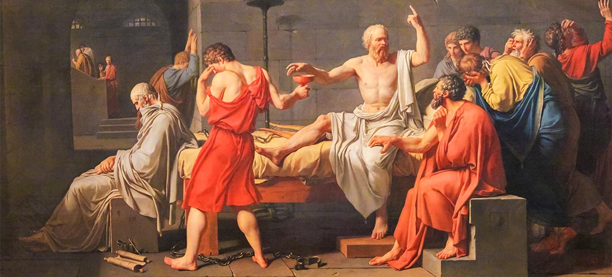

EL GIR ANTROPOLÒGIC
Al s.V a.C., la filosofia abandona l'estudi de la naturalesa i gira la mirada cap a l'ésser humà: la política, l'ètica, el llenguatge i la virtut. La democràcia atenesa transforma radicalment el que significa saber i ser virtuós.
Cronologia del segle V a.C.
~500
Guerres Mèdiques.
Victòria atenesa sobre Pèrsia.
~470
Neix Sòcrates.
~461
Reformes democràtiques de Pèricles.
~450
Arriben els Sofistes.
Comença el Gir Antropològic.
399
Mort de Sòcrates.
Plató continua el seu llegat.
"L'home és la mesura de totes les coses." — Protàgores
Context Històric · Atenes · s. V a.C.
Del triomf militar a la revolució cultural i democràtica
La victòria d'Atenes sobre els perses a les Guerres Mèdiques li va atorgar un poder econòmic i polític sense precedents. Pèricles va aprofitar aquest auge per impulsar reformes democràtiques profundes que van transformar radicalment la vida pública.
En aquest nou context, el centre de la vida ciutadana passa a ser el debat i la discussió política a les assemblees. El bon ús del discurs i la capacitat de persuadir es converteixen en les habilitats fonamentals del nou ciutadà atenenc.
"S'abandonà l'estudi de la Physis, i l'atenció filosòfica passà a centrar-se en el propi home i les qüestions derivades de la seva actuació social: la política, l'ètica, l'art..."
Això es coneix com el Gir Antropològic: el desplaçament del focus filosòfic des de la naturalesa (Physis) cap a l'ésser humà i les seves institucions (Nomos).
Nova forma de govern
La democràcia exigeix una creixent participació política de tots els ciutadans. Cal participar, opinar, debatre.
El poder del discurs
La capacitat de parlar bé i persuadir l'assemblea determina qui obté poder i èxit. La retòrica es converteix en l'eina clau.
Una nova educació
El ciutadà necessita habilitats que es poden aprendre. Apareix una demanda d'educació que els Sofistes satisfaran.
Abans (aristocràcia)
La virtut era hereditària. Cosa de nobles i guerrers. S'expressava en el camp de batalla: valentia, força, lideratge.
Ara (democràcia)
La virtut = èxit social. S'expressa a l'assemblea. Qualsevol la pot aprendre. Els sofistes la venen.
Conceptes Fonamentals
La gran distinció que estructura el pensament del Gir Antropològic
La Naturalesa · Allò incondicional
Legislació, costums, tradicions etc. · Allò convencional
Els sofistes apliquen el relativisme a tot allò que és Nomos: política, ètica, moral, tradicions. I l'escepticisme com a postura epistemològica: no hi pot haver un coneixement objectiu de la Fisis; el llenguatge s'interposa sempre entre nosaltres i la realitat.
Atenes · s. V a.C. · Mestres de la Persuasió
Els primers educadors professionals de la democràcia
Els sofistes van sorgir a Atenes com un grup variat d'educadors que, tot i no compartir una ideologia comuna, ensenyaven les habilitats essencials del nou ciutadà democràtic: l'art de parlar en públic i defensar idees.
El terme "sofista" avui té connotació negativa, però a l'antiga Grècia significava simplement "persona hàbil i experta". Es relacionava principalment amb la formació en oratòria, retòrica i estilística — les habilitats necessàries per participar en les assemblees democràtiques.
El bon maneig del discurs, des de l'aspecte formal —no tant del contingut— era clau en la nova tasca del ciutadà d'Atenes.
La capacitat de persuadir l'assemblea es va mostrar com una poderosa eina per obtenir poder i èxit. I tot això era ensenyable. Els sofistes ho sabien i en feien negoci.
Primers educadors professionals. S'enriqueixen ensenyant habilitats retòriques a qui pugui pagar.
L'objectiu no és la veritat sinó la persuasió. Allò que importa és com es diu, no què es diu.
No hi ha veritats absolutes en l'àmbit humà. La veritat depèn de qui jutja, quan i on.
Transmeten el saber als alumnes a través de discursos i lliçons magistrals. No busquen la veritat conjuntament.
El Pare del Relativisme
Protàgores va ser el sofista més influent i el primer a cobrar per les seves lliçons. Va expressar el cor del pensament sofista en una de les frases més citades de la filosofia antiga:
"L'home és la mesura de totes les coses: de les que existeixen, en tant que existeixen; de les que no existeixen, en tant que no existeixen."
— Protàgores
No hi ha valors en si
El valor de les coses depèn de qui judica. No existeix una veritat objectiva independent del subjecte que percep.
El perill moral
En termes morals, el relativisme porta a un "tot val" on l'únic criteri és l'interès particular. La demagògia i la corrupció s'obren pas.
La virtut és ensenyable
Si no hi ha una veritat absoluta, la virtut no és un do hereditari sinó una habilitat. Qualsevol pot aprendre-la — i pagar per fer-ho.
L'Escepticisme Absolut
Gòrgies va portar l'escepticisme fins al seu límit més extrem amb una de les formulacions més radicals de la filosofia antiga:
"Res no existeix;"
"si existís, no fora cognoscible;"
"i si fos cognoscible, no fora comunicable."
— Gòrgies
Res no existeix
Nihilisme ontològic: cap realitat és cognoscible en si mateixa.
Si existís, no ho podríem conèixer
El llenguatge s'interposa sempre entre nosaltres i la realitat, fent de mitjancer que distorsiona.
Si ho coneguéssim, no ho podríem comunicar
Les paraules no capturen la realitat; cada receptor les interpreta diferent.
Gòrgies era famós per defensar qualsevol tesi i la seva contrària amb la mateixa solvència. Demostrava que allò que realment importava no era el què es deia, sinó el com. El secret de l'èxit era la manipulació del sentiment de l'audiència a través de la retòrica.
Davant el relativisme sofista...
Si els sofistes diuen que "tot val", Sòcrates respon que hi ha valors universals i absoluts. Si els sofistes venen saviesa, Sòcrates declara la seva ignorància. Si els sofistes fan monòlegs, Sòcrates inicia diàlegs.
Atenes · 470–399 a.C.
El filòsof que sabia que no sabia res
Sòcrates, nascut a Atenes, és la figura central del Gir Antropològic. No va deixar cap obra escrita, però la seva influència ha donat forma a tota la filosofia occidental posterior. El coneixem a través dels diàlegs del seu deixeble Plató.
Era conegut per la seva habilitat en la conversa i va reunir figures prominents al seu voltant sense cobrar mai pels seus ensenyaments. La seva actitud crítica i impertinent cap als que es creien savis el va fer guanyar enemics poderosos.
"Només sé que no sé res."
— Sòcrates
Jutjat sota acusacions absolutament falses d'impietat i corrupció de la joventut, va ser condemnat a mort als 70 anys. Podent escapar, va optar per donar una lliçó d'integritat i de coherència: va morir bevent cicuta.
La mort de Sòcrates va impactar profundament el seu deixeble Plató, que la interpretà com la prova definitiva que una societat sense saviesa moral és incapaç de fer justícia.
Epistemologia · Mètode
Ironia i Maièutica: les dues fases del diàleg filosòfic
El mètode socràtic consistia en un procés de dues fases que permetia a Sòcrates conduir els seus interlocutors des de la falsa certesa fins a la recerca honesta de la veritat. Contrastava radicalment amb els monòlegs retòrics dels sofistes.
Primera fase · "Dissimular per qüestionar"
Sòcrates s'aproximava a un interlocutor que es creia saber, formulava una pregunta aparentment simple: "Però, exactament, què és la justícia?" o "Què és la valentia?"
L'interlocutor donava una resposta convençut de saber-la. Sòcrates llavors la qüestionava amb noves preguntes cada cop més precises, fins que quedava clar que la resposta inicial no podia ser defensada.
El resultat era la perplexitat (aporia): l'interlocutor que es creia saber descobria que en realitat no sabia.
Funció: No ridiculitzar, sinó alliberar l'interlocutor dels seus prejudicis. La perplexitat és el punt de partida necessari per a la recerca sincera.
Segona fase · "L'art d'ajudar a donar a llum"
Quan l'interlocutor acceptava la seva ignorància, era possible iniciar una investigació conjunta. Sòcrates guiava el diàleg amb preguntes successives per ajudar l'altre a "donar a llum" la veritat que ja portava dins.
El terme "maièutica" fa referència a l'art de les llevadores (la mare de Sòcrates n'era una). Com una llevadora, Sòcrates no donava la veritat: assistia el procés de trobar-la.
"Coneix-te a tu mateix": tothom ja té la veritat dins seu. Sòcrates només ajuda a fer-la aflorar.
Diferència amb els sofistes: Ells transmeten un saber extern als alumnes. Sòcrates entén que el saber és interior i que el diàleg és l'única via per trobar-lo.
El diàleg socràtic pas a pas
Pregunta inicial — Sòcrates pregunta: "Què és la justícia?" L'interlocutor creu saber-ho.
Ironia — Sòcrates qüestiona la resposta amb noves preguntes. L'interlocutor es queda sense arguments.
Aporia — L'interlocutor reconeix la seva ignorància. Ara és possible un diàleg real.
Maièutica — Investigació conjunta a través de preguntes i respostes. Gradual acostament a la veritat.
Ètica · Epistemologia
La resposta de Sòcrates al relativisme sofista
Sòcrates mai no va acceptar el relativisme sofista. Davant del "tot val", va afirmar que els valors morals són absoluts i iguals per a totes les persones, en tot moment i en tot lloc.
Si tothom pogués conèixer veritablement què és el bé, ens adonaríem que és el mateix per a tots. Les diferències d'opinió neixen de la ignorància, no de la pluralitat de la veritat.
Només podem tenir ciència (autèntic saber) en relació a allò universal. No pot haver ciència d'allò particular, d'allò que ara és i ara no és.
Quan "tot val", la demagògia i l'interès particular s'imposen per sobre del bé comú. La corrupció s'obre pas. Sense valors universals, no hi pot haver justícia real a la polis. Aquesta és la connexió profunda entre l'ètica socràtica i la política.
Sòcrates identifica el bé amb el coneixement i el mal amb la ignorància. Qui sap veritablement en que consisteix el bé, necessàriament s'hi comporta d'acord.
Qui actua malament no és un "malvat" sinó un ignorant que comet un error perquè no sap en que consisteix el bé.
La filosofia és fonamental: només amb l'ajuda de la filosofia serem capaços de descobrir el bé veritable.
La virtut s'identifica amb el saber: no es pot ser valent si no saps que és la valentia. Un sabater no pot fer sabates si no sap que és una sabata.
L'equació fonamental de Sòcrates
No hi ha felicitat sense virtut, i la virtut no és possible des de la ignorància. La filosofia, en tant que cerca del saber, és el camí cap a la felicitat.
Herència Socràtica · ~427–347 a.C.
Primera aproximació: el deixeble que va anar més enllà del mestre
Plató era deixeble de Sòcrates i provenia d'una família aristòcrata — detall important per comprendre el seu rebuig a la democràcia. La condemna injusta de Sòcrates el va decebre profundament de la política.
La posterior guerra del Peloponnès i el breu règim dels Trenta Tirans van acabar de convèncer-lo: la ciudad necessitava un fonament filosòfic sòlid per ser justa.
Plató va escriure la cèlebre Carta Sèptima: "Fins que els governants no siguin filòsofs (savis) o els filòsofs, els que saben del bé, siguin els governants, la ciutat no serà justa i no podrà haver felicitat."
Plató va escriure en forma de diàlegs — més d'una trentena — on el personatge principal és sempre Sòcrates. Va fundar l'Acadèmia a Atenes, la primera institució d'ensenyament superior d'Occident.
De Sòcrates
La recerca de l'universal. La maièutica com a model de coneixement. L'intel·lectualisme moral.
De Parmènides
La immutabilitat de l'Ésser vertader. La desconfiança dels sentits.
De Heràclit
El món sensible és canviant i impermanent.
De Pitàgores
El dualisme cos-ànima (l'orfisme). La importància de les matemàtiques.
Dels Sofistes
El perill del relativisme. La necessitat de superar-lo per salvar la justícia a la polis.
Busca conceptes universals (definicions): la Justícia, el Bé, la Valentia... Però per a ell són realitats del pensament o intel·lecte.
Va més lluny: dota de realitat independent a allò que en Sòcrates eren conceptes. Els anomena IDEES. Existeixen en un món separat: el Món de les Idees.
Mite fundacional de la filosofia platònica
Els presoners
Al fons d'una caverna, encadenats des del naixement, immobilitzats mirant endavant. Veuen únicament les ombres projectades al fons per figures que circulen darrere un mur il·luminat per una foguera.
L'alliberament
Un presoner s'allibera i passa a l'altra banda del mur. Descobreix que allò que creia real no eren més que ombres. Amb esforç, acaba sortint de la caverna.
El món exterior
A la llum del sol descobreix l'autèntic món: bell, immens, real. El sol representa la Idea del Bé, la realitat màxima.
El retorn
El presoner alliberat torna a la caverna a explicar la veritat als seus companys. Però aquests no el creuen i no en fan cap cas. Les cadenes també els empresonen l'esperit.
La caverna = el món sensible, les aparences
Les ombres = les opinions falses i els prejudicis
La foguera = la raó parcial (com els sofistes)
El món exterior = el Món de les Idees
El sol = la Idea del Bé, la realitat suprema
El presoner alliberat = el filòsof
El retorn = el deure del filòsof de governar la polis
Món de les Idees
Ser (Parmènides). Perfecte, immutable, universal. Accessible a la raó.
Món Sensible
Moviment (Heràclit). Variable, particular, corrompible. Percebut pels sentits.
Sofistes vs. Sòcrates: el debat que dura fins avui
"L'home és la mesura de totes les coses." — Protàgores
"Saber = Virtut = Felicitat." — Intel·lectualisme moral socràtic
El Gir Antropològic ens interpel·la fins avui
La democràcia fa necessari el discurs retòric?
La democràcia atenesa ho va demostrar: sense habilitat per parlar, no tens veu. Avui els mitjans i les xarxes han canviat l'arena, però la lògica és la mateixa.
La virtut es pot aprendre?
Els sofistes diuen que sí i en fan negoci. Sòcrates diu que sí però que no es pot transmetre des de fora: cal descobrir-la des de dins.
Són els sofistes els "polítics actuals"?
El domini del discurs per persuadir sense que importi el contingut ressona amb molts polítics i comunicadors actuals. El "doble discurs" de Gòrgies és ben viu.
Existeixen valors absoluts o tot és relatiu?
El relativisme sofista és atractiu perquè sembla respectuós de la diversitat. Però, com advertia Sòcrates, sense un referent universal la justícia es converteix en una qüestió de poder.
Qui actua malament és ignorant o malvat?
L'intel·lectualisme moral diu que és ignorant. Però, pot ser que algú sàpiga el que és bo i triï el mal? La psicologia moderna ho posa en qüestió.
El diàleg és sempre possible?
Sòcrates creia que el diàleg honest porta a la veritat. Però, quan l'interlocutor no actua de bona fe, el mètode socràtic es trenca. Qui domina el discurs pot simular el diàleg.
Han de governar els més savis?
Plató ho defensa. Però, qui decideix qui és el més savi? I no implica això el risc d'una tecnocràcia o d'una dictadura "il·lustrada"?
Vivim a la caverna?
Les xarxes socials, les bombolles d'informació i la desinformació fan el mite de la caverna més pertinent que mai. Quines són les "ombres" que prenem per realitat?
El nou context polític d'Atenes transforma el que significa saber i ser virtuós. La retòrica es converteix en poder.
Relativisme i escepticisme. La veritat depèn del subjecte. La virtut = èxit. El discurs com a eina de poder.
Universalisme moral. La veritat és absoluta. Saber = Virtut = Felicitat. La filosofia com a servei a la polis.
De la Physis a l'Home: el moment en que la filosofia descobreix la seva vocació política i moral.